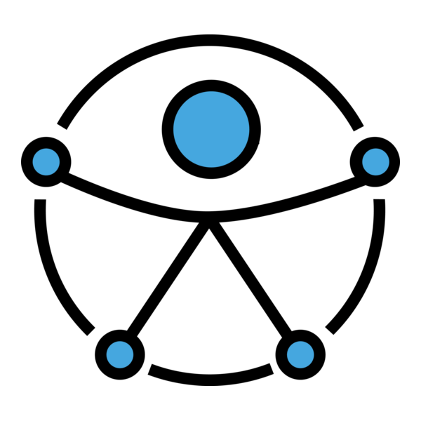

Sobre mim!!!
Minha trajetória une a maturidade de 30 anos em negócios e gestão corporativa à competência técnica consolidada no Desenvolvimento Front-End.
Meu foco não é apenas escrever código, mas entregar interfaces inclusivas (WCAG) e soluções que resolvam problemas reais. Atuo como um "tradutor" entre a necessidade do cliente/negócio e a viabilidade técnica, utilizando minha bagagem executiva para garantir entregas funcionais e organizadas.
Como eu Trabalho
-
Tecnologia: React.js, TypeScript e Tailwind CSS para interfaces modernas.
-

Acessibilidade: Aplicação prática das diretrizes WCAG desde a estrutura do HTML.
-
Visão de Produto: Atuo com mentalidade de Product Owner (PO), focando no valor que o software entrega.
Tecnologia Principal
-
React.js
Biblioteca JavaScript para desenvolvimento de SPA, Componentes reutilizáveis e Hooks.
-
HTML5
Linguagem de marcação para estruturação de páginas web, com suporte a elementos semânticos e mídia avançada.
-
CSS3
Estilos visuais e responsividade para páginas web, com animações e personalização avançada.
-
Javascript
Linguagem de programação para adicionar interatividade e lógica a sites e aplicações.
Tecnologias e Ferramenta em Estudo
-
TypeScript
Superset do JavaScript que adiciona tipagem estática, melhorando a produtividade e a qualidade do código.
-
TailwindCSS
Framework utilitário que acelera o desenvolvimento de interfaces modernas e responsivas de forma consistente.
-
Jest
Framework de testes unitários focado em alta performance para aplicações modernas em JavaScript/React.
-
Acessibilidade (A11Y)
Práticas e diretrizes para tornar aplicações web acessíveis a todos os usuários, incluindo pessoas com deficiências.
-
Figma
Plataforma de design de UI/UX colaborativo, fortalecendo a integração entre design e desenvolvimento.
Meus Projetos

LabPharmacy
Meu primeiro projeto de estudos. Criação de um sistema para gerenciamento de farmácias e medicamentos, utilizando React.JS.

PharmaSellticos
Projeto final do curso de Full-Stack do Senai-SC, criação de um Marketplace de Medicamentos, sendo utilizado no Front-End, React.JS e no Back-End Node-JS, Express, Sequelize com banco de dados PostgreSQL.

Nível de Herói
Projeto prático do Bootcamp Ri-Happy - Front-End do Zero, para desenvolver uma página de classificação de herói, baseada na regra de armazenar e verificar a quantidade de XP (vida) e apresentar uma mensagem. Projeto reviu conceitos de HTML, CSS e JavaScript.

Jogo Yu-Gi-Oh
Projeto prático do Bootcamp Ri-Happy - Front-End do Zero, para desenvolver uma página de jogo de cartas baseado no universo Yu-Gi-OH de Kazuki Takahashi. Projeto reviu conceitos de HTML, CSS e iniciou a lógica intermediária do JavaScript.
Desenvolvedor Front-End
Projeto prático da trilha FullStack da Rocketseat, com o objetivo de desenvolver uma página de portfólio para desenvolvedor, incluindo links para projetos e contato profissional. Durante o projeto, explorei a flexibilidade do HTML e a organização do CSS, além de compreender a importância de uma estrutura bem planejada para facilitar a manutenção futura das aplicações.